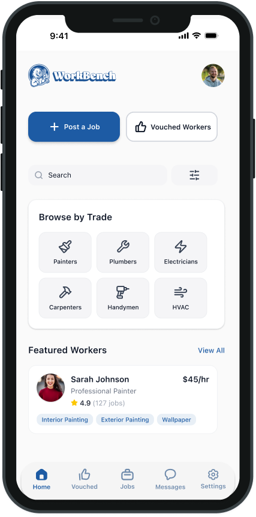
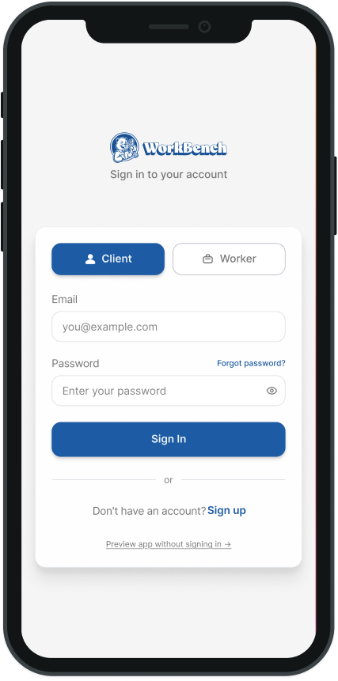
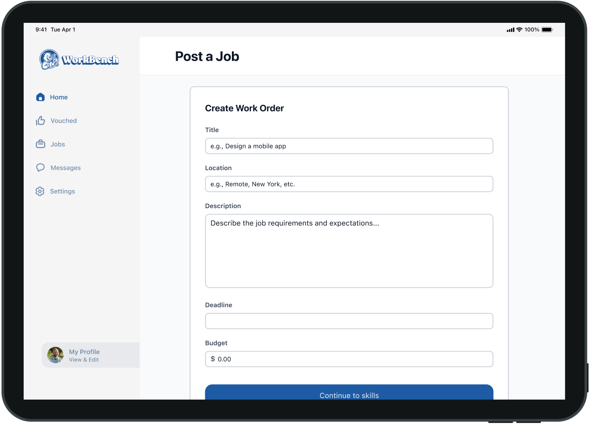
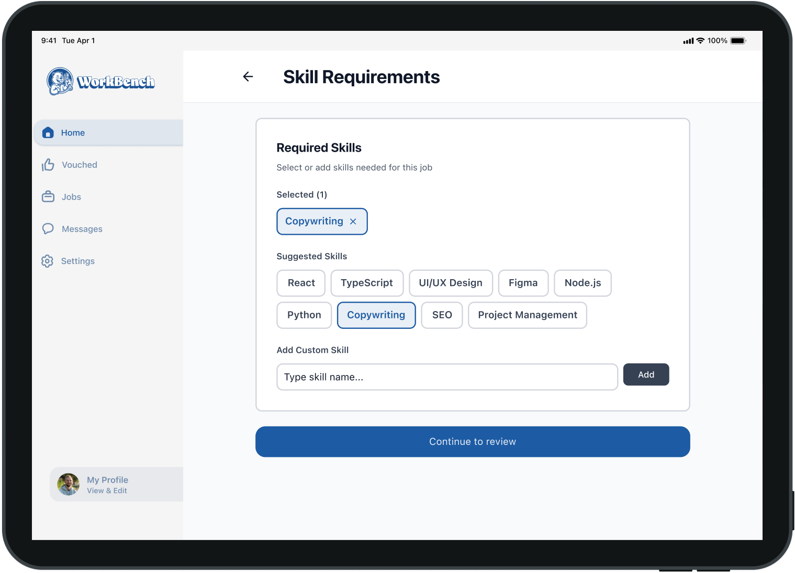
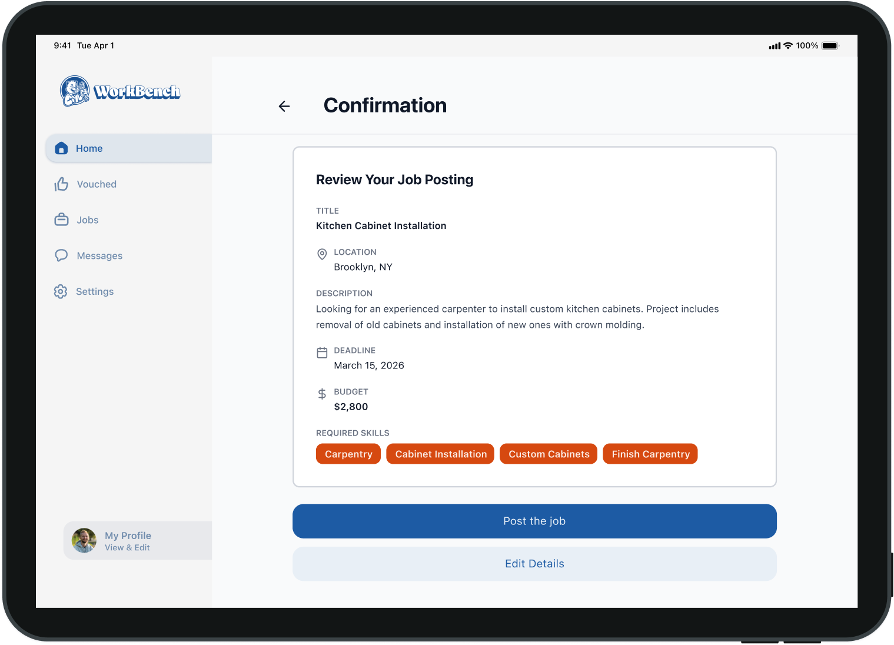
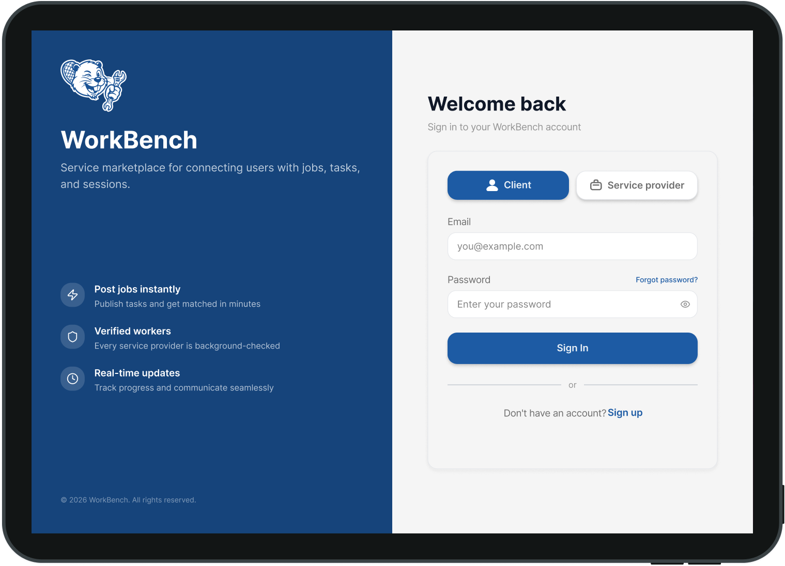

WorkBench is a mobile-first marketplace connecting verified tradespeople with real job opportunities — built for the job site, not the desk.


Project Overview
Modernizing skilled trades hiring by connecting verified talent with clients through a fair, accessible, and worker-first digital experience.
01 — Mission
Connect verified tradespeople and clients through a fair, accessible platform that supports real careers — not just short-term gigs.
02 — Users
Skilled tradespeople & apprentices seeking visibility and work. Homeowners, contractors, and firms looking for verified, trustworthy talent.
03 — The Gap
Existing platforms favour established businesses, leaving new workers invisible and clients without reliable ways to compare their options.
04 — Pitch
A worker-first marketplace connecting verified trades talent with real opportunities — built for the job site, not the desk.
Research & Discovery
We explored labour shortages, trust in trades hiring, digital barriers, and the realities of mobile use in job-site environments.
Method 01
Reviewed TaskRabbit and job boards to identify gaps in skill verification, long-term growth support, and worker-centred design.
Method 02
Explored labour shortages, digital transformation in trades, and barriers affecting accessibility, trust, and industry entry.
Method 03
Built journeys for three target users to identify emotional friction, pain points, and opportunity areas across the full lifecycle.
Method 04
Used FigJam and Miro to collaboratively define product structure and core marketplace journeys for both user types.
Insight 1 — Workers need visibility and credibility tools, especially when new, independent, or early in their careers.
Insight 2 — Clients need stronger trust signals than a short bio — proof of skill, reviews, certifications, and past work matter.
Insight 3 — Communication around scope, timing, and expectations is one of the biggest friction sources on both sides.
Insight 4 — Trade users need lightweight, fast tools — not systems that add complexity or form-heavy workflows.
Core User Flows
We mapped the full lifecycle for both clients and providers, then designed flows that reduce friction at every handoff.
Flow 1 — Client hires a worker
Login or sign up
Client dashboard
Browse workers or post a job
View worker profile
Start chat, clarify details
Hire & manage active jobs
Flow 2 — Worker finds work
Login or sign up
Worker dashboard
Browse available jobs
Apply or start chat
Get hired & manage projects
Complete & receive vouches
Design Screens
Mobile-first flows that reduce cognitive load for workers using the platform in busy, fast-moving environments.




Proposed Solution
Certifications, past work, and trust signals that go beyond a simple bio.
Digital word-of-mouth to help newer workers build credibility and surface strengths.
Faster communication with less friction around scope, changes, and scheduling.
Shared expectations, visible details, and stronger process checkpoints on both sides.
Reflection
Designing a booking flow that balanced clarity, communication, and security for both sides simultaneously — required the most iteration of any section.
Two-sided marketplaces require you to hold two mental models at once. Every design decision that helps one user type can create friction for the other.
Expand the student apprentice onboarding and run usability testing to validate the vouch system's trust-building effectiveness with real users.
Le Poison Bleu is a French-inspired fine dining restaurant. This project designed their full website experience from scratch — crafting a visual identity, information architecture, and event discovery system across desktop and mobile.
Le Poison Bleu
Desktop
Mobile View
01 · Overview
Le Poison Bleu needed more than a website — it needed a digital experience that matched the ambiance of the restaurant itself. The goal was to design a full site that communicated elegance, made reservations frictionless, and surfaced events in a way that felt exciting, not cluttered.
End-to-end design across all pages — from brand identity to final hi-fi prototypes for desktop and mobile.
All screens and components designed in Figma. Custom fish logo and visual assets created in Adobe Illustrator.
Home, Menu, Our Story, Reservations, Events — designed as a cohesive system across desktop and mobile breakpoints.
02 · The Problem
High-end restaurants frequently rely on word of mouth and third-party platforms, leaving their own website as an afterthought. This creates a mismatch — guests expect a premium experience before they even walk in the door.
Restaurant websites often fail to communicate atmosphere, making it hard for new guests to understand the experience they're signing up for — especially for a venue like Le Poison Bleu, where ambiance is central to the brand.
Design a site that acts as a digital extension of the restaurant — conveying sophistication, making it easy to explore the menu and events, and removing all friction from the reservation flow.
03 · Research & Insights
Competitive analysis of fine dining websites, combined with user research around restaurant discovery and reservation behaviour, surfaced key priorities.
Menu discoverability is #1. Users consistently cited not being able to find the menu quickly as a top frustration. PDF menus and buried navigation were major drop-off points.
Events drive return visits. Guests who knew about a restaurant's special events were significantly more likely to rebook. But most restaurant sites buried events in footers or separate links.
Mobile-first decision making. Most restaurant research happens on mobile — users browse menus, check hours, and look at photos on their phones before deciding to book.
Visual storytelling builds trust. High-quality imagery and thoughtful design act as social proof — they communicate quality and set expectations for the dining experience.
04 · Information Architecture
The site was structured around five core user goals: exploring the restaurant, browsing the menu, learning the story, booking a table, and discovering events.
Home
Brand intro, hero imagery, quick links to reservations and menu.
Menu
Digitised, scannable menus — no PDFs. Organised by course.
Our Story
Brand narrative, chef profile, and philosophy of the restaurant.
Reservations
Frictionless booking flow. Date, party size, time selection.
Events
Upcoming events with cards, pricing, and clear CTAs.
Reserve Table
Persistent CTA in the nav — accessible from every page.
05 · Design Decisions
Every design decision was made to evoke the sophistication of Le Poison Bleu while keeping the experience clean and accessible.
A deep navy (#1b3d6f) paired with crisp white creates a sense of refinement and depth — echoing the nautical undercurrent of the restaurant's name and concept.
A hand-crafted illustrated fish mark was designed to be distinctive and ownable — simple enough for the nav, expressive enough to anchor the brand identity.
The Events page uses a full-bleed image carousel to create a sense of occasion — each event feels curated and special, not like a list item on a bulletin board.
The reservation button is persistent in the navigation on all pages, removing any friction for users who are ready to book at any point in their browsing journey.
06 · Screen Highlights
Designed at full fidelity for both desktop and mobile, with consistent components and spacing across all breakpoints.
Home Page
Events Page
Mobile View
07 · Feature Focus · Events
The events section was a key differentiator in the design. Rather than a simple list, it uses a carousel hero and card-based layout with pricing, date, and time — making each event feel curated and exclusive.
March 15, 2026 · 6:00 PM – 9:00 PM
$85 per person. A guided tasting featuring curated pairings selected by the sommelier.
March 22, 2026 · 7:00 PM
$150 per person. An intimate evening with the chef — a multi-course tasting menu with live narration.
08 · Reflection
Designing for hospitality means designing for emotion as much as function. Every screen carries a responsibility to make guests feel something before they arrive.
The strongest design decisions came from asking "does this feel like Le Poison Bleu?" — keeping brand identity and UX in constant conversation rather than treating them separately.
Fine dining guests are used to restraint. Removing clutter, using whitespace generously, and letting imagery breathe made the site feel more premium than any added decoration could.
Designing the mobile experience in parallel — not as an afterthought — forced better decisions on layout priority, touch targets, and content hierarchy that improved the desktop too.